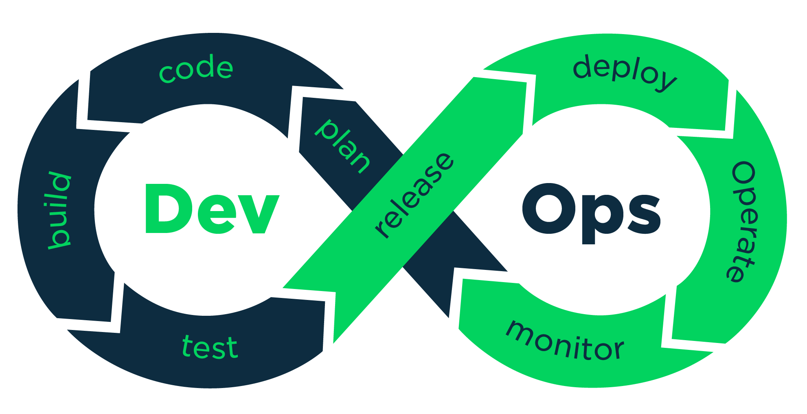
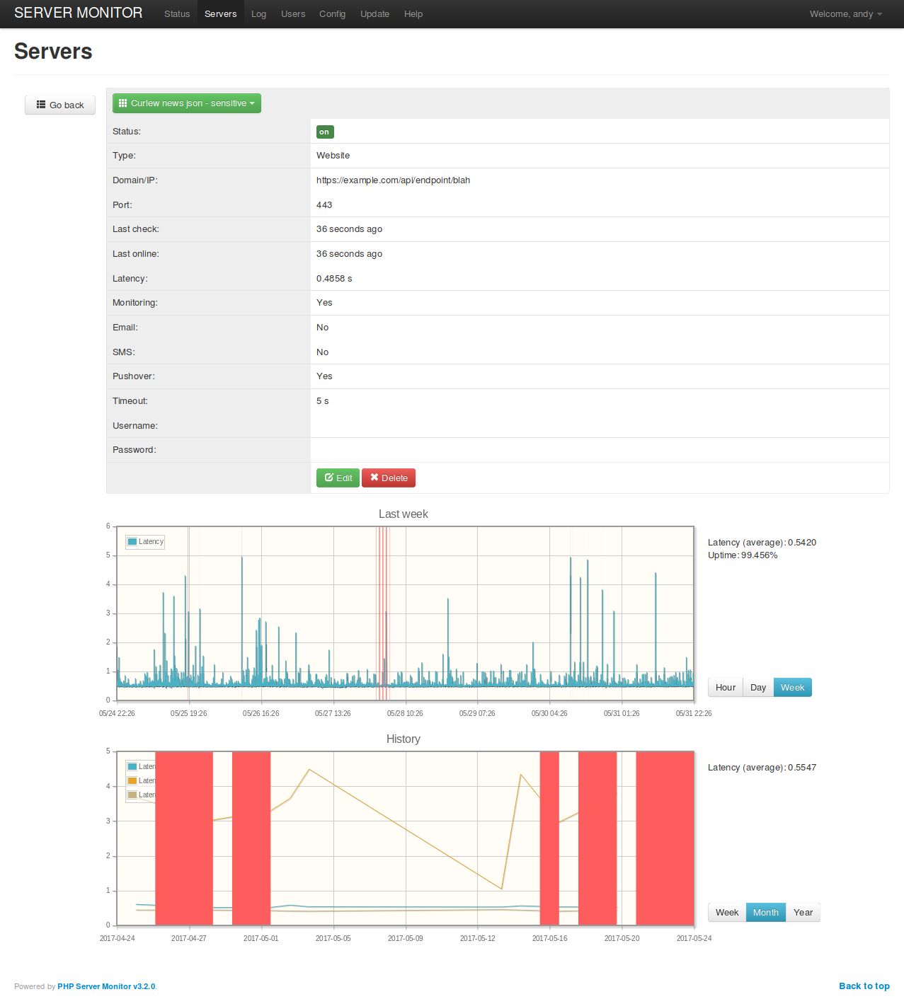

Your Joomla dev-ops, ci & cd toolbox
Hi, I'm Andy
Who?
Who?...
- Web developer from the UK with 20 years experience
- From London, living in Aberdeen via Edinburgh, Sydney and Glasgow
- Developing with Joomla for 10 years, mainly doing App backends & APIs last couple of years
- twitter: AndyGasman
- email: ag@ssofb.co.uk
Intro...
Why this talk?...
Just a bit of context and background
- Developing app backends
- Each backend is a Joomla CMS with and API, CMS plus extentions
- Scale out and up, many backends, rolling updates, many users
- Start up from London, small team, gotta work smart
What will we cover?
A little bit of a lot...
- Devops
- Continous integration
- Continous deployment
What is DevOps?
Preface
Some quick notes on the talk
- All notes and code based on Debian / Ubuntu
- Code and examples in Github
- Just ask anytime with questions
- This is not everything!
Automation, Geting Started
Scripting
- bash?
- php?
- node.js?
Basic devops Ninja skills
Find large files, list with path and size...
find . -type f -size +50M -exec ls -lh {} \; | awk "{ print $9 ": " $5 }"Find text in php files...
grep -rnw --include="*.php" . myneedleFind text in php and ini files...
grep --include=\*.{php,ini} -rnw . -e "myneedle"Automation Options
- Scripts
- Taskrunner
- CI/CD system
- Headless browser
Automating Updates
Joomla CLI
Quite new, but really handy
- Calls joomla code directly
- https://github.com/joomla-projects/cli-update
- update core
- install extentions
- update extentions
- remove extentions
Automate Updates
- Git hook scripts
- Using git-ftp
Git hook scripts
- Can build a whole ci/cd system with git hooks
- Enviroment variables are handy, but can make debug tricky
- Start out with a simple message hook
- Try initiating tests from hooks
- Don't forget to make the hook scripts executable
- Look at the sample files in ".git/hooks"
Git hooks
On the server, useful ones are...
- pre-receive: great for starting unit tests and checks
- post-receive: run tests or deploy
- commit: like pre-receive but branch by branch
Locally, useful ones are...
- pre-commit: good for checking commits
- commit-msg: handy to add automated info to the message, test results etc
- post-commit: good for sending notifications or updating a dashboard
git-ftp (the bash one)
- https://github.com/git-ftp/git-ftp
- Lovely tool for deployment
- Can just upload the changed files
- Works really nicely as a post-receive git hook
Upload all
git ftp initUpload changes
git ftp catchupAutomate Deployment
Deployment Automation Options
- Akeeba UNiTE
- Docker
- Jenkins and Travis
- Vagrant
- sym linked directories
Akeeba UNiTE
- Extracts jpa files
- xml config
- Put xml files in inbox diretory
- Run on php cli php unite/unite.php
- Great for mass migrations
Getting started with Akeeba UNiTE
- Download from https://www.akeebabackup.com
- Extract the zip
- Set some paths in the config.php
- Write xml files or use a base
- Simple automation or more complex
- Really nice inbox feature, just chuck xml files in a directory
UNiTE XML config example
base.jpa
0
MY_SYSNAME.log
1
MY_SITE_NAME
email@example.com
MY_SITE_DIR
0
mysqli
localhost
MY_DB_USERNAME
MY_DB_PASSWORD
MY_BE_NAME
MY_PREFIX
UNiTE for creating new Joomla sites
- Have multiple jpa seeds
- Copy a base xml, substitute in site details
- Run UNiTE
UNiTE script
Jenkins and Travis
- Jenkins was a the original, many features and integrations, system driven config and xml
- Travis, looked like a replacement, yml config file driven
- Jenkins then introduced jenkinsfile, config driven
- Big overlap, but maybe Jenkins for complex projects, Travis for less complicated
- Easy to create Joomla containers
- Great for dev
- Great for testing extentions
- Production use?
Getting started with docker
Install docker community edition
Start a container...
docker run --name some-joomla --link some-mysql:mysql -d joomlaMore info at https://hub.docker.com/_/joomla/
Editing docker containers
- Lots of docker containers on https://github.com/joomla-projects
- Simple yml file
- Can host them on docker hub
- Can kick off builds with Github integrations
- Some sort of Docker support in most other CI / CD systems
- docker compose
- Easy to create Joomla containers
- Great for dev
- Production use?
What is Vagrant and why use it?
- Great pre-made images
- JoomlaTools https://github.com/joomlatools/joomlatools-vagrant
- Symlink your code into the box
- Most images include dev tools like phpMyAdmin, WebGrind, xDebug, Z-Ray, etc
Getting started with Vagrant
Install VirtualBox and Vagrant
Download it...
vagrant init joomlatools/boxRun it...
vagrant upSSH onto it...
vagrant sshCreate a site...
joomla site:create mysiteSym linked directories
- Good for lots of instances
- Makes updates a little harder
- Read only file system can cause issues
instances
- parents
- alpha
- beta
- prod
- children
- tom
- richard
- harry
- whateverSym link scripting - create
#!/bin/sh
echo "Hello, this is a script to create a Joomla site from a symlinks"
echo "It requires three parameters:"
echo "Parameter 1: full site name, eg 'Hill Valley'"
echo "Parameter 2: system site name, lower case no spaces, eg 'hillvalley'"
echo "Parameter 3: source, eg 'live'"
# get params
sitename=$1
sysname=$2
source=$3
echo "sitename: $sitename "
echo "sysname: $sysname "
echo "source: $source "
# create the db user and db
mysql -u root --password=mypassword -N -e "CREATE USER '$sysname'@'localhost' IDENTIFIED BY 'password';"
mysql -u root --password=mypassword -N -e "GRANT USAGE ON *.* TO '$sysname'@'localhost' REQUIRE NONE WITH MAX_QUERIES_PER_HOUR 0 MAX_CONNECTIONS_PER_HOUR 0 MAX_UPDATES_PER_HOUR 0 MAX_USER_CONNECTIONS 0;"
mysql -u root --password=mypassword -N -e "CREATE DATABASE IF NOT EXISTS $sysname;"
mysql -u root --password=mypassword -N -e "GRANT ALL PRIVILEGES ON $sysname.* TO $sysname@'localhost';"
# do a dump n load
mysqldump -h localhost -u root --password=mypassword $source > $sysname.sql
mysql -h localhost -u root --password=mypassword $sysname < $sysname.sql
# create folders
mkdir symlink_demo/children/$sysname
mkdir symlink_demo/children/$sysname/images
mkdir symlink_demo/children/$sysname/tmp
mkdir symlink_demo/children/$sysname/cache
mkdir symlink_demo/children/$sysname/administrator
mkdir symlink_demo/children/$sysname/administrator/cache
mkdir symlink_demo/children/$sysname/administrator/logs
# read in the config
configbase=`cat symlink_demo/parents/$source/configuration.php`
echo "$configbase"
configbase="${configbase//parents/children}"
configbase="${configbase//$source/$sysname}"
echo "$configbase"
echo $configbase > symlink_demo/children/$sysname/configuration.php
# copy files
cp symlink_demo/parents/$source/htaccess.txt symlink_demo/children/$sysname/
cp symlink_demo/parents/$source/robots.txt symlink_demo/children/$sysname/
cp symlink_demo/parents/$source/index.php symlink_demo/children/$sysname/
cp symlink_demo/parents/$source/administrator/index.php symlink_demo/children/$sysname/administrator/
cd symlink_demo/children/$sysname
pwd
# create symlinks
ln -s ../../parents/$source/bin .
ln -s ../../parents/$source/cli .
ln -s ../../parents/$source/components .
ln -s ../../parents/$source/includes .
ln -s ../../parents/$source/language .
ln -s ../../parents/$source/layouts .
ln -s ../../parents/$source/libraries .
ln -s ../../parents/$source/media .
ln -s ../../parents/$source/modules .
ln -s ../../parents/$source/plugins .
ln -s ../../parents/$source/templates .
cd administrator
pwd
ln -s ../../../parents/$source/administrator/components .
ln -s ../../../parents/$source/administrator/help .
ln -s ../../../parents/$source/administrator/includes .
ln -s ../../../parents/$source/administrator/language .
ln -s ../../../parents/$source/administrator/manifests .
ln -s ../../../parents/$source/administrator/modules .
ln -s ../../../parents/$source/administrator/templates .
Sym link scripting - re-point
#!/bin/sh
echo "Hello, this is a script to create a Joomla site from a symlinks"
echo "It requires two parameters:"
echo "Parameter 1: source, eg live or beta"
echo "Parameter 2: target, eg site1"
source=$1
target=$2
# cd into the target
cd symlink_demo/children/$target
pwd
# create symlinks
ln -s -f ../../parents/$source/bin .
ln -s -f ../../parents/$source/cli .
ln -s -f ../../parents/$source/components .
ln -s -f ../../parents/$source/includes .
ln -s -f ../../parents/$source/language .
ln -s -f ../../parents/$source/layouts .
ln -s -f ../../parents/$source/libraries .
ln -s -f ../../parents/$source/media .
ln -s -f ../../parents/$source/modules .
ln -s -f ../../parents/$source/plugins .
ln -s -f ../../parents/$source/templates .
cd administrator
pwd
ln -s -f ../../../parents/$source/administrator/components .
ln -s -f ../../../parents/$source/administrator/help .
ln -s -f ../../../parents/$source/administrator/includes .
ln -s -f ../../../parents/$source/administrator/language .
ln -s -f ../../../parents/$source/administrator/manifests .
ln -s -f ../../../parents/$source/administrator/modules .
ln -s -f ../../../parents/$source/administrator/templates .
Automation, Headless Browsers
Headless browsers
Many options, Selenium, PhantomJS, Nightmare
Many drivers, CasperJS, CodeceptJS, Zombie.js
- Automate tests
- Automate tasks
- Script things a human does
CasperJS
Easy to set-up
- Easy to set-up
- https://github.com/casperjs/casperjs/tree/master/samples
- Fairly easy to write scripts
CasperJS Joomla update example
var casper = require("casper").create({
verbose: true,
//logLevel: "debug"
});
var current_version = "3.7.2";
// increase the viewport
casper.options.viewportSize = {width: 1200, height: 1200};
// get a datestamp field
var m = new Date();
var now = m.getUTCFullYear() +"-"+ (m.getUTCMonth()+1) +"-"+ m.getUTCDate() + "_" + m.getUTCHours() + "-" + m.getUTCMinutes();
casper.echo("CasperJS Update Script Started");
// get the first passed in value
var domain = casper.cli.get(0);
var username = casper.cli.get(1);
var password = casper.cli.get(2);
casper.echo("domain: " + domain);
casper.echo("Date and Time: " + now);
var img_sufix = "_" + domain + "_" + now;
casper.start("https://" + domain + "/administrator", function() {
// login
this.fill("form#form-login", {
username: " + username + ",
passwd: " + password + "
}, true);
});
casper.then(function() {
// grab the screen
this.capture("screencaptures/jadmin1" + img_sufix + ".png");
});
// print the version
casper.then(function() {
var footer_text = this.fetchText("#status .btn-toolbar .btn-group p");
this.echo("Footer is : " + footer_text);
var alert_message_is_current_version = footer_text.search(current_version);
casper.echo("alert_message_is_current_version: " + alert_message_is_current_version);
if ( alert_message_is_current_version == -1 ) {
casper.echo("**** Not the current version " + current_version + " ****");
casper.then(function() {
// go to the update page
casper.open("https://" + domain + "/administrator/index.php?option=com_joomlaupdate").then(function() {
this.capture("screencaptures/jadmin2" + img_sufix + ".png");
casper.echo("logged in");
});
});
casper.then(function() {
// grab the screen
this.capture("screencaptures/jadmin3" + img_sufix + ".png");
casper.echo("capture screen");
});
casper.then(function() {
// Click on purge button
this.click("#toolbar-purge button");
casper.echo("purged updates");
});
casper.then(function() {
// grab the screen
this.capture("screencaptures/jadmin4" + img_sufix + ".png");
casper.echo("capture screen");
});
casper.then(function() {
// see if the update button is there
if(!casper.exists("#adminForm button")){
// button does not exist
casper.echo("update button does not exist, now exit");
this.exit();
} else {
// Click on update button
this.click("#adminForm button");
casper.echo("clicked update");
}
});
casper.then(function() {
casper.wait(40000, function() {
this.echo("Waited some seconds");
});
});
casper.then(function() {
// grab the screen
this.capture("screencaptures/jadmin5" + img_sufix + ".png");
casper.echo("capture screen");
});
casper.then(function() {
// go to the update page
casper.open("https://" + domain + "/administrator/index.php?option=com_installer&view=database").then(function() {
this.capture("screencaptures/jadmin6" + img_sufix + ".png");
casper.echo("logged in");
});
});
}
});
casper.run(); CodeceptJS
- Very easy to write
- Mainly for acceptance testing
- Just like Codecpetion
codeceptjs run mytest.js --stepsCodeceptJS Joomla update example
Feature('CodeceptJS demo');
Scenario('Update Joomla', (I) => {
I.amOnPage('http://localhost/joomla_test/administrator/');
I.see('Go to site home page');
I.saveScreenshot('login_form.png');
I.fillField('username', 'joomla_test');
I.fillField('passwd', 'password');
I.click('Log in');
I.saveScreenshot('logged_in.png');
I.amOnPage('http://localhost/joomla_test/administrator/index.php?option=com_joomlaupdate');
I.saveScreenshot('update_screen_pre.png');
I.see('Check for Updates');
I.click('Check for Updates');
I.saveScreenshot('update_screen_check.png');
I.see('Checked for updates')
I.click('Install the Update');
I.saveScreenshot('update_screen_install.png');
I.see('successfully updated');
I.saveScreenshot('update_screen_done.png');
})CodeceptJS Joomla update example - output
codeceptjs run codeceptjs_joomla_update.js --steps
CodeceptJS v0.6.2
Using test root "/var/www/html/piota/devops_tools/codeceptjs_tests"
CodeceptJS demo --
Update Joomla
??? I am on page "http://localhost/joomla_test/administrator/"
??? I see "Go to site home page"
??? I save screenshot "login_form.png"
??? I fill field "username", "joomla_test"
??? I fill field "passwd", "password"
??? I click "Log in"
??? I save screenshot "logged_in.png"
??? I am on page "http://localhost/joomla_test/administrator/index.php?option=com_joomlaupdate"
??? I save screenshot "update_screen_pre.png"
??? I see "Check for Updates"
??? I click "Check for Updates"
??? I save screenshot "update_screen_check.png"
??? I see "Checked for updates"
??? I click "Install the Update"
??? I save screenshot "update_screen_install.png"
??? OK in 35461ms
OK | 1 passed // 35sMonitoring
Monitoring - Systems
- phpservermon
- Cacti
phpservermon
Monitoring - Services
- UptimeRobot
- Montastic
- Datadog
- New relic
Joomla Monitoring
- Watchfu.ly
- MyJoomla
Automated Testing
Automated testing
A whole talk in itself
- Unit testing
- Acceptence testing
- Integration testing
- Regression testing
- Performance testing
CI / CD platforms
CI / CD on platforms
- Gitlab
- Github
- Bitbucket
- Assembla
- Atlassian
- Pipelines feature, great taskrunner
- Runner for scaling
- Nice Jenkins integration
- Free private repos

- Limited CI/CD features
- Lots of integrations
Bitbucket
- Pipelines feature, great taskrunner
- Good docker support
- Free private repos
Bamboo
- Full CI / CD solution
- Limited CI/CD features
- Nice AWS integration
- Handy SSH and FTP options
Other options...
- Jenkins.io
- CircleCI
- Teamcity
- Go.cd
- ...and a few others
Questions...?
Notes...
Examples at https://github.com/AndyGaskell/J_and_Beyond_2017
Any questions, just ask, or DM me on Twitter @AndyGasman